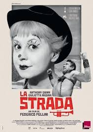
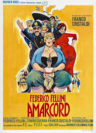
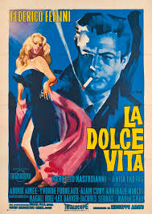

I- Les Vitelloni
Synopsis
Dans une petite cité balnéaire du nord de l’Italie, cinq amis assistent au dernier événement de la saison, l’élection de Miss Sirène 1953. Moraldo le benjamin rêveur, Fausto le don Juan, Alberto le boute-en-train, Leopoldo le poète et Riccardo le troubadour sont des « vitelloni » : de jeunes adultes désœuvrés de l’après-guerre qui vivent toujours chez leurs parents, végètent dans le cadre monotone de la province et rechignent à se lancer dans la vie. Ils passent leur temps à jouer au billard, traîner aux terrasses des cafés et déambuler la nuit venue dans les rues vides de la ville endormie. Ils s’entretiennent de farces, de bons mots, de projets futiles, au risque de voir leur jeunesse leur passer sous le nez. Fausto, mis devant ses responsabilités, est contraint d’épouser Sandra, la sœur de Moraldo, et de prendre un emploi dans une boutique d’articles religieux, sans pour autant renoncer à ses incartades, séduisant tout ce qui bouge, jusqu’à la femme de son patron. Alberto s’épuise à faire la fête, mais ne voit que trop tard sa sœur Olga lui glisser entre les doigts et filer avec son amant. Leopoldo rate quant à lui sa rencontre avec un grand tragédien de passage en tournée auquel il voulait confier sa pièce. Envahie par le chagrin causé par les absences de son mari, Sandra disparaît un beau matin avec leur bébé. Les cinq amis se lancent à sa recherche. Le soir, Fausto la retrouve chez son père qui administre une bonne correction à ce fils trop inconséquent. Tous prennent conscience que les murs de la ville se referment peu à peu sur eux à l’exception de Moraldo, qui se résout à prendre le train pour Rome avant qu’il ne soit trop tard.
Les Vitelloni ou I Vitelloni en italien est le troisième film de Federico Fellini. Sortie en 1953, le film dépeint le quotidien de 5 jeunes hommes qui vivent sur le littoral italien à Rimini dans une Italie post-fasciste qui tente de se reconstruire. Nous avons commencé par étudier cette oeuvre cette année. Malgré la date de sortie, le film peut être considéré comme appartenant au mouvement cinématographique du néo-réalisme italien. Fellini ayant lui-même été l'assistant-réalisateur de Roberto Rossellini (figure presque légendaire du néo-réalisme) sur de grandes oeuvres tels qu' Allemagne année 0 ou bien encore Rome, ville ouverte, on l'associe facilement au mouvement également. De plus certains codes néo-réalistes italiens sont souvent présents dans le cinéma de Fellini. Assez brièvement, le réalisateur joue sur le réel et la fiction, ses plans ne sont pas toujours à petit budget ou bien sur place. Alberto Sordi, l'acteur jouant Alberto, était en tournée lorsque le film était en production. Fellini et le reste de l'équipe l'ont donc suivie et ont reproduit par exemple la mer des côtes de Rimini.
Cette année, on a pu approfondir nos connaissances en la matière ainsi qu'aiguiser notre vue sur les détails du film comparé à l'année précédente.
On a également pu voir et étudier d'autres oeuvres du même cinéaste telles que :



II - D'autres oeuvres de Fellini étudiées en classe
Synopsis
Gelsomina, femme enfantine naïve, a été cédée par sa mère à Zampano, un hercule de foire qui vit de ses piètres numéros. La frêle jeune fille va peu à peu se mettre à aimer le colosse malgré sa brutalité. Zampano se découvre une sorte de rival en la personne d'un funambule lunaire, baptisé il Matto, le fou.
Synopsis
Chronique autobiographique de Federico Fellini rêvée à Corpole, dans l'Italie fasciste des années 30, où quelques souvenirs d'enfance, fantasmes sexuels et ses visions oniriques se mêle à son goût pour les récits digressifs et truculents. Les habitants célèbrent l'arrivée du printemps en brûlant tout ce qui leur tombe sous la main. La Volpina, une étrange mythomane, subit la rudesse des noceurs. La belle Gradisca s'exhibe en compagnie de ses soeurs.
Synopsis
Marcello Rubini, a quitté sa province italienne pour Rome dans le but de devenir écrivain, mais celui-ci est devenu chroniqueur dans un journal à sensations. Il fait donc la tournée des lieux dans lesquels il est susceptible de décrocher quelques scoops afin d'alimenter sa chronique. Un soir, las de la jalousie maladive de sa maîtresse Emma il sort avec Maddalena. Le lendemain Sylvia, une grande star hollywoodienne fait son arrivée à Rome.
III - D'autres films néo-réalistes
Synopsis
Francesca et son ami Walter sont recherchés par la police pour avoir dérobé un collier de grande valeur. Ils se mêlent aux journalières réunies pour récolter le riz dans la plaine du Pô. Reconnu par la police, Walter est contraint de se cacher tandis que Francesca réussit à passer pour une des femmes qui partent travailler. Mais Silvana, une travailleuse, va, pour son malheur et celui de Walter, s'intéresser à leur histoire.
Synopsis
Umberto Domenico Ferrari, petit professeur retraité, n'a guère de raison de se féliciter de son dévouement à l'Etat. La maigre pension que lui alloue son ancien employeur ne suffit plus à lui assurer une existence décente. Seul au monde, le vieil homme doit se contenter de la compagnie de son chien, Flac. Menacé d'expulsion par sa logeuse puis hospitalisé, Umberto se résout finalement à mendier pour survivre.
Synopsis
Rome, hiver 1944. Un ingénieur communiste, Giorgio Manfredi, tente d'échapper aux Allemands qui occupent la ville. Il se réfugie chez un ami dont la fiancée, Pina, le met en contact avec le curé de la paroisse Don Pietro. Mais la maîtresse de Manfredi va tous les dénoncer aux Allemands.
Synopsis
Au cours de l'été 1947, la famille Koeler est à la dérive dans une ville de Berlin dévastée. Son père très malade, son frère recherché et sa sœur hantant les bars louches, le petit Edmund est le seul à gagner de quoi faire vivre la famille. Il revoit son ancien instituteur nazi..
Synopsis
Dans la Rome de l'après-Seconde Guerre mondiale, Antonio, chômeur depuis deux ans, trouve un emploi de colleur d'affiches. Malheureusement, il se fait voler sa bicyclette, outil indispensable dans le cadre de son nouveau métier. Accompagné de son fils, il se met à la recherche de son seul moyen de subsistance pour lui et sa famille.
Synopsis
Simone hérite d'une maison de campagne délabrée dans le sud de la France. Elle part s'y installer avec Eric, son mari et leurs deux enfants. Son rêve est de rénover la maison mais les choses ne vont pas se passer comme prévu.
Après la guerre, Karin, une jeune réfugiée tchèque, rencontre Antonio, un soldat. Amoureux, il lui propose de l'épouser et de l'emmener vivre sur son île de Stromboli. Ne pouvant obtenir le visa qu'elle espérait, Karin accepte de le suivre. Une fois sur l'île, elle se retrouve confrontée à une nature aride, à une population hostile et à un mari qu'elle n'a pas choisi.